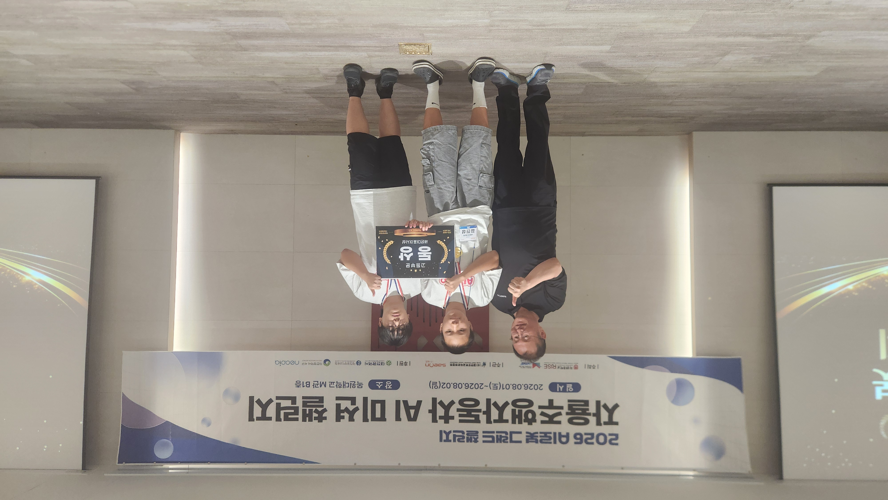
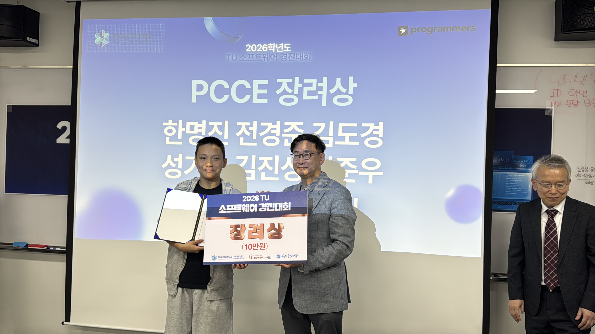

실전 프로젝트 & 경진대회
카드를 클릭하면 실제 문제 해결 과정과 작성한 소스코드를 확인할 수 있습니다.
자율주행 경진대회 · 동상

알티노 아두이노 자율주행
A선수로서 출발 및 터널 미션을 완벽 수행하고 스피드 1등 기록 달성
클릭해서 트러블슈팅 & 실제 코드 보기 ↻실전 트러블슈팅 & 알고리즘
- 역할: A선수 (출발 미션, CDS 터널 진입 및 멜로디 제어)
- 해결 1: CDS 조도 센서값(<300)으로 터널 즉시 인식 및 LED 점멸
- 해결 2: 350mm 급감속 시 비트 연산(`& 1`) ABS 역추력 펌핑 브레이크 구현
// 실제 대회에서 사용한 ABS 제동 알고리즘
클릭해서 닫기 ↺
void speed(int mm1, int mm2) {
if (sensor.TOF[2] >= mm1) { go(1000, 1000); brakeCounter = 0; }
else if (sensor.TOF[2] <= mm2) {
brakeCounter++;
if (brakeCounter <= 10) {
if (brakeCounter & 1) { go(-700, -700); } // 강력한 역추력
else { go(-350, -350); } // ABS 펌핑 감속
} else { go(450, 450); } // 탈출 속도
}
}
모빌리티 챌린지 · 특별상

알티노 AI 라이다 차선인식 주행
알티노 AI를 활용해 라이다 기반 차선 인식 주행 및 돌발 변수 극복
클릭해서 위기 극복 과정 보기 ↻현장 위기 극복과 팀워크
- 상황: 주행 중 라이다 센서 먹통으로 차선 인식 불능 위기 발생
- 대응: 당황하지 않고 팀원들과 긴급 회의 후 예비 주행 로직으로 실시간 코드 수정
- 결과: 타이트한 트랙 폭 속에서도 끝까지 완주해내며 특별상 수상
- 배운 점: 하드웨어 이상 상황에 대비한 이중 안전 코드 설계의 중요성 체득
SW 알고리즘 · 장려상

교내외 알고리즘 경진대회
선생님의 권유로 낯선 분야에 도전해 1학년 최초로 입상한 프로젝트
클릭해서 학습 과정 보기 ↻호기심과 집념의 학습 과정
- 시작: 처음 접하는 알고리즘 분야라 두려웠으나 도전 자체에 호기심을 갖고 시작
- 노력: 방과후와 자습 시간에 수많은 예제 문제를 풀고 친구/선생님께 질문하며 기초 정립
- 결과: 수업 시간에 다진 기본기를 응용해 1학년 최초 장려상 수상
- 성장: 어려운 과제도 주저 없이 부딪치면 해결할 수 있다는 자기효능감 획득
자기주도 탐구 · 공학 영어
📖 GitHub Open-Source Docs
시험 영어를 넘어 실전 공학 영어로
한국어 자료가 없는 최신 센서 라이브러리의 영문 README.md 및 API 문서를 독해하여 로봇 제어에 적용한 프로젝트
클릭해서 체득 어휘 & 탐구 과정 보기 ↻GitHub 오픈소스 독해 & 탐구
- 문제 인식: 알티노 고도화 및 센서 제어를 위한 최신 오픈소스는 한국어 매뉴얼 부재
- 실행: 공식 GitHub README 가이드라인과 C/C++ 헤더 파일 영문 주석 직접 분석
- 체득 어휘:
- 결과: 시험용 문법을 넘어 글로벌 오픈소스 생태계에서 스스로 답을 찾는 개발 탐구력 입증